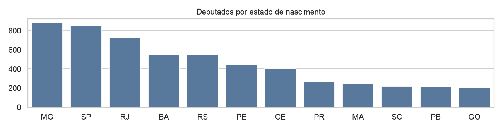
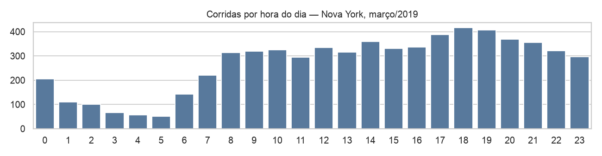

Um dataset público real, três perguntas e um relatório —
duas entregas, as duas notas do semestre
escolher um dataset público real, formular três perguntas de negócio e respondê-las percorrendo o pipeline inteiro — incluindo o que você não conseguiu responder.
projeto.ipynba evidência do que o relatório afirma — narrado em markdown, e roda do começo ao fim sem erroTemplate SBC — o ZIP baixa direto daqui:www.sbc.org.br/wp-content/uploads/2024/07/modelosparapublicaodeartigos.zip
Vem em .docx e em LaTeX. Escolham o formato hoje, não em novembro.
Onde procurar · como escolher · os mínimos que o seu tem que cumprir · dois exemplos rodados de verdade
dados.gov.br/dados/conjuntos-dadoskaggle.com/datasetsVocês vão conviver com esse dataset por quatro meses. Escolha por interesse, não por conveniência.
sklearn, seaborn)| Requisito | Mínimo | O que conta como isso |
|---|---|---|
| Tamanho | ≥ 2.000 linhas | 7.889 deputados · 12.400 voos · 5.300 escolas |
| Largura | ≥ 10 colunas | colunas de conteúdo — id e código não contam |
| Numéricas | ≥ 3, com 1 contínua | contínua: preço, distância, salário, nota não conta como contínua: nº de filhos, nº de quartos |
| Categóricas | ≥ 3, com 1 de mais de 5 | sexo (2) · situação (3) · estado (27) ← essa é a de mais de 5 |
| Temporal | ≥ 1 data, ≥ 12 meses | data de nascimento · data da compra · data do voo |
| Texto | ≥ 1 coluna | nome, endereço, descrição, nome do município |
| Sujeira | ≥ 1 coluna 5% a 50% vazia | "12% dos deputados sem estado de nascimento" |
Mais dois que nenhuma conta verifica: uma coluna que sirva de alvo para o modelo da Etapa 2, e fonte pública com licença declarada.
df.shape → tamanho e largura
(7889, 13)df.dtypes → número ou texto
str 10
int64 2
float64 1str pode ser categoria ou texto — o nunique decide
df.nunique() → categórica ou contínua
siglaSexo 2
ufNascimento 28
municipio 1460
nome 7550df.isna().mean() → a sujeira
cpf 1.000
ufNascimento 0.122
dataNascimento 0.113
siglaSexo 0.000cpf está 100% vazia: não serve para nada
Se vier tudo numa coluna só: sep=";" · acento quebrado: encoding="latin-1" · número virou texto: decimal=","
df = pd.read_csv(
"deputados.csv", sep=";")
df.shape
df["ufNascimento"].value_counts()(7889, 13)
MG 881
SP 850
RJ 722
BA 551
RS 544
7.889 linhas, 13 colunas, com data de nascimento, UF, sexo e nome — e 893 datas faltando.dadosabertos.camara.leg.br/arquivos/deputados/csv/deputados.csv
import seaborn as sns
df = sns.load_dataset("taxis")
df.shape
df.groupby("payment")["tip"].mean()(6433, 14)
payment
cash 0.00
credit card 2.78
Gorjeta média zero em dinheiro? Ninguém é pão-duro: o sistema não registra gorjeta em espécie. Vazio e zero não são a mesma coisa.
Serve para treinar, não serve para o projeto — vem com o seaborn, e dataset de biblioteca está na lista dos proibidos.
A pergunta · a estrutura obrigatória · as limitações · como cada entrega é avaliada
Teste: se a resposta for "ok, interessante" e ninguém fizer nada diferente — a pergunta era fraca.
| Critério | O que se olha | Etapa 1 | Etapa 2 |
|---|---|---|---|
| Perguntas | relevância, clareza e recorte das três | 20% | 10% |
| Dados e fonte | fonte, licença, dicionário, unidade de observação | 20% | 5% |
| Tratamento dos dados | limpeza justificada, derivadas com propósito | 40% | 15% |
| Análise e visualização | as respostas se sustentam? os gráficos comunicam? | — | 25% |
| Modelagem | escolha adequada, baseline, métrica bem lida | — | 15% |
| Limitações | honestidade e profundidade | — | 15% |
| Reprodutibilidade | abrir → Run All → roda sem erro e os números batem | 10% | 10% |
| Texto e formato SBC | redação, figuras com legenda, citações, referências | 10% | 5% |
Vai abrir a janela de impressão do navegador. Confira estas três opções:
Cada slide vira uma página no formato 4:3. O PDF sai sempre no tema claro, para não gastar tinta se você imprimir em papel.